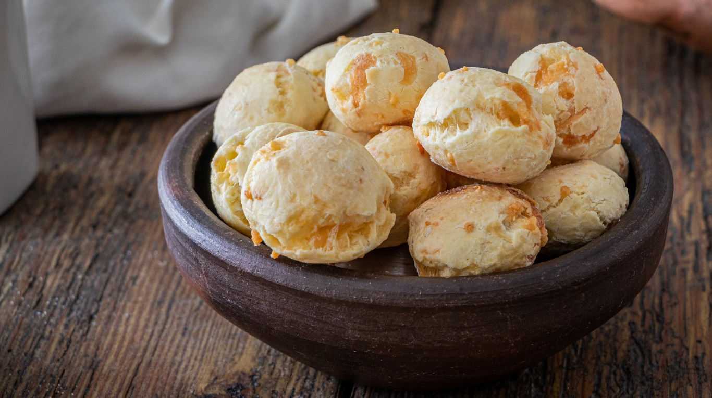

"¡Bienvenido a De mi tierra Colorada! Explora un mundo de deliciosas recetas de cocina del territorio misionero. Nuestra plataforma te ofrece una amplia variedad de recetas que puedes preparar con ingredientes comunes. Desde platos caseros reconfortantes hasta creaciones gourmet, estamos aquí para inspirarte y ayudarte a llevar la cocina a tu hogar. Únete a nosotros en un emocionante viaje culinario donde encontrarás recetas paso a paso, consejos de cocina y mucho más. ¡Empieza a descubrir nuevas y emocionantes recetas ahora!"
Recetas Misioneras
El reviro es un plato típico que suele comerse en nuestra adorada provincia de Misiones, más comúnmente los días de frío y lluvia. Se suele acompañar ya sea con huevo frito o hervido, con una salsa de carne con verduras, y con mate cocido puro o con leche. También se puede comer con un poco de azúcar. Es una receta clásica, fácil y rápida de hacer. Aparte es muy rica.
¿Por qué no te animas a preparar las Chipitas Misioneras en la comodidad de tu propia cocina? Esta receta tradicional te brinda la oportunidad de explorar los sabores únicos de la región de Misiones en Argentina desde tu hogar. La combinación de queso y almidón de mandioca crea un bocado irresistible: crujiente por fuera y suave por dentro. Siguiendo la receta, podrás experimentar la autenticidad de la cocina misionera y disfrutar de un sabor que te transportará directamente a esa hermosa región. ¡No pierdas la oportunidad de convertirte en un chef misionero por un día y deleitar a tus sentidos con estas Chipitas caseras!
Al igual que la sopa paraguaya, el vorí vorí es una herencia de la cocina desarrollada en las reducciones franciscanas y en las misiones jesuíticas guaraníes, y es tradicional de la gastronomía de Paraguay y el NEA. El vorí vorí se trata básicamente de un caldo espeso en el que se encuentran dispuestas pequeñas bolas de harina de maíz y queso.